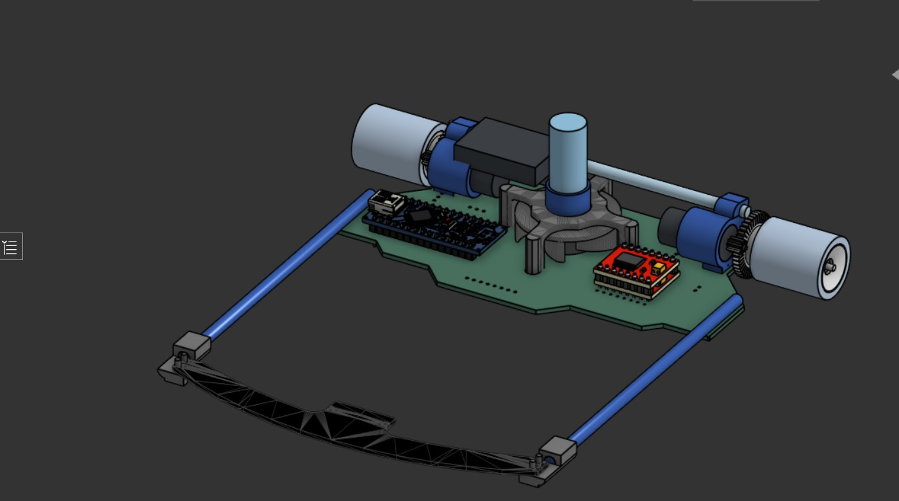

Versión 4
El siguiente paso del robot del equipo RoTech.

Mejoras de esta versión
Las mejoras que incorpora esta version van a ser utilidsades como una PCB a la medida junto con una interfas grafica mejorada para la programacion en tiempo real de lis valores del pid
Cada versión nace de lo que aprendimos en las competencias: algunas fueron problemas con la trubina, la funcionalidad de la interfaz y no tener una pcb customisada.
Volver al inicio